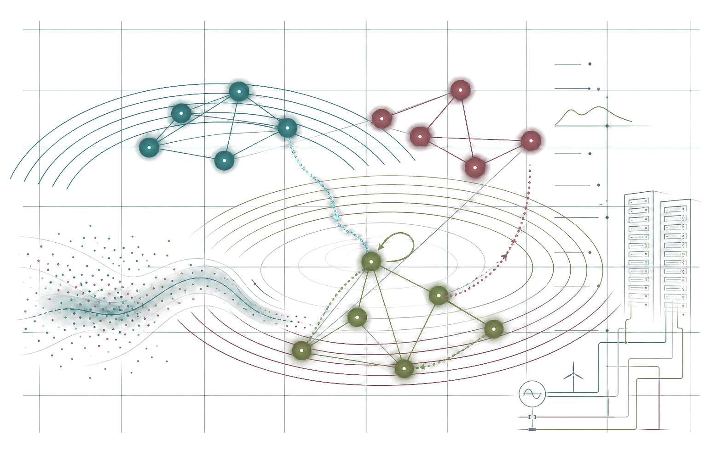

Sequential decision-making: theory and algorithms
Theory and algorithms for reinforcement learning and stochastic optimization under structural information such as predictions, factorization, and constraints.

Learning, optimization, control, and energy systems
Eric and Wendy Schmidt AI Postdoctoral Fellow, AI for Science Institute, Cornell University
My research develops theoretical and algorithmic foundations for reliable sequential decision-making under uncertainty, with applications in energy systems and AI infrastructure.
About me
I am an Eric and Wendy Schmidt AI Postdoctoral Fellow at the AI for Science Institute, Cornell University, working with Prof. Fengqi You. My research develops structure-aware reinforcement learning, stochastic optimization, and safe control methods for large-scale energy and AI infrastructure.
Before joining Cornell, I received my Ph.D. in Computer Science from the Institute for Interdisciplinary Information Sciences at Tsinghua University in 2025, advised by Prof. Chenye Wu and Prof. Ran Duan. I was also a visiting student researcher in Computing and Mathematical Sciences at Caltech, advised by Prof. Adam Wierman.
I received my bachelor's degree in Computer Software Engineering from Huazhong University of Science and Technology in 2020.
Research areas
Theory and algorithms for reinforcement learning and stochastic optimization under structural information such as predictions, factorization, and constraints.
Application-driven learning, optimization, and control methods for power-system operation, storage control, dispatch, unit commitment, and demand flexibility.
Models and optimization frameworks for AI data centers, regional power systems, supply headroom, and emerging infrastructure planning questions.
Selected publications
Instruction and mentoring
Guest lectures and course support in AI for Science, AI for Energy Systems, and Deep Learning at Cornell University.
Teaching assistant experience in Combinatorial Mathematics and AI Research Practice at Tsinghua University.
Research mentoring for junior researchers who continued to Ph.D. programs in ECE, CEE, and CS.
News
NeurIPS Spotlight paper on reinforcement learning with imperfect predictions.
Eric and Wendy Schmidt AI Postdoctoral Fellow at the AI for Science Institute, Cornell.
Reviewer for NeurIPS, AAAI, IEEE CDC, ACC, PSCC, IEEE SmartGridComm, ACM e-Energy, Applied Energy, IEEE Transactions on Pattern Analysis and Machine Intelligence (TPAMI), IEEE Transactions on Smart Grid, IEEE Transactions on Power Systems, and related journals.
TPC member for IEEE SmartGridComm; poster reviewer for ACM e-Energy 2026.
Contact